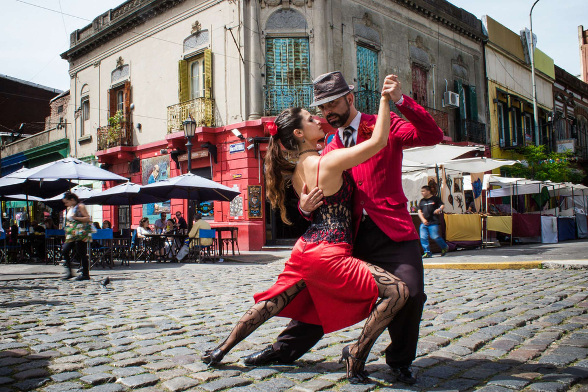
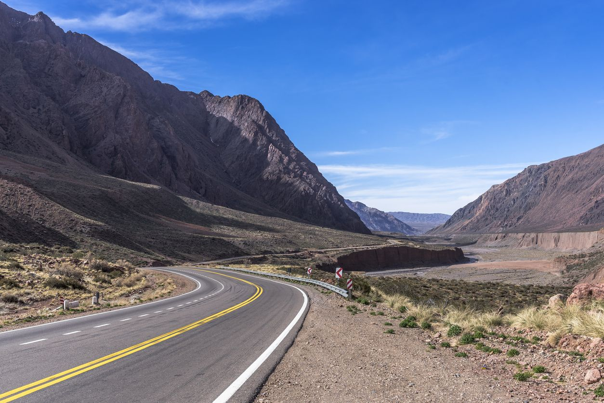
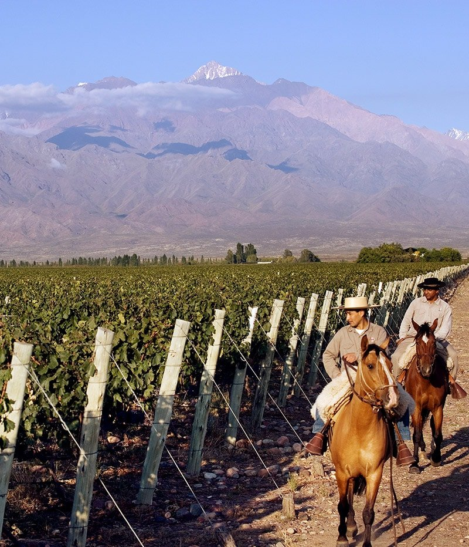
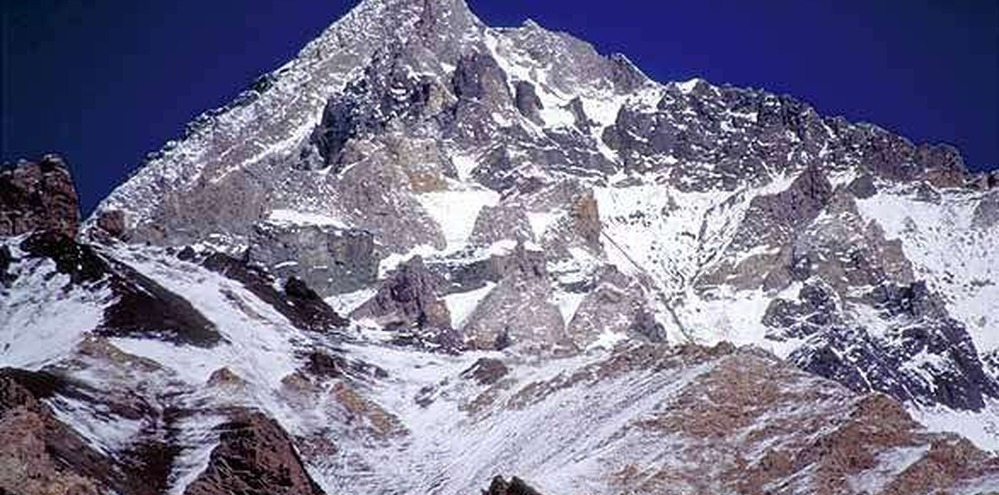

Buenos Aires & Mendoza à parts égales
Découvrez l'Argentine entre culture urbaine et grands espaces viticoles. À Buenos Aires : quartiers historiques, asados et tango. À Mendoza : vignobles Malbec, paysages andins et Aconcagua. Un circuit qui allie passion, vin et altitude, avec une nuit de bus-lit premium à travers la Pampa pour relier les deux mondes.
Le voyage en un coup d'œil

🏛️ Buenos Aires
- San Telmo, Recoleta, La Boca
- Initiation tango & quartiers historiques
- Delta du Tigre
- Microcentro animé

💃 Le tango argentin
- Initiation de 2h avec professeur
- Dîner-spectacle dans un lieu mythique
- Milongas traditionnelles
- Mélancolie du bandoneón

🐎 La Pampa
- Traversée de nuit en bus-lit premium
- 1 049 km à travers l'immensité
- 13h05 de route de nuit
- Changement de paysage spectaculaire

🌿 Mendoza
- Oasis viticole au pied des Andes
- 320 jours de soleil par an
- Cerro de la Gloria
- Centre-ville et places

🍷 Vignobles & Malbec
- Bodega La Rural & Musée du Vin
- Dégustation de Malbec
- Vallée de Uco
- Cépage star de Mendoza

🏔️ Andes & Aconcagua
- Aconcagua (6 962 m)
- Pont de l'Inca (2 700 m)
- Panoramas d'altitude
- Frontière du Chili
L'asado, rituel national argentin
Plus qu'un barbecue, l'asado est un moment de partage et de convivialité. Viandes cuites lentement sur la braise, accompagnées de salades, de pain et de bons vins.
Votre itinéraire jour par jour
1ère semaine – Buenos Aires
Arrivée & San Telmo
Change d'argent. Découverte de San Telmo et de son marché dominical. Initiation au tango argentin (2h) avec un professeur local. Soirée au Bar Paulín.
Microcentro
9 de Julio, autour du Congrès, Plaza de Mayo, Av. de Mayo, Edificio Barolo. Pause au Café Tortoni et pré-milonga en soirée.
Recoleta & Abasto
Parque San Martín, Cimetière de la Recoleta, librairie El Ateneo. Quartier de l'Abasto : Musée Carlos Gardel. Asado du soir.
La Boca
Caminito, Stade Bombonera, couleurs et tango populaire. Soirée tango-show dans un établissement mythique.
Puerto Madero
Réserve naturelle Costanera Sur, Frégate Sarmiento, promenade autour des Diques. Milonga libre en soirée.
Delta du Tigre
Train Mitre jusqu'à Tres Bocas, balade en bateau-bus. Canaux, nature et maisons sur pilotis. Une parenthèse de fraîcheur.
Trajet de nuit vers Mendoza
Journée libre à Buenos Aires. En soirée : départ en bus-lit premium Buenos Aires → Mendoza (1 049 km, 13h05 de route).
2ème semaine – Mendoza & Andes
Arrivée à Mendoza
Installation à l'hôtel en centre-ville. Découverte de la ville et montée au Cerro de la Gloria pour un panorama sur l'oasis.
Route des vins
Bodega La Rural, Musée du Vin et dégustation de Malbec. Le cépage star de Mendoza, né en France mais sublimé ici.
Vallée de Uco
Visite d'une deuxième bodega dans la Vallée de Uco. Déjeuner au vignoble avec vue sur les paysages viticoles d'exception.
Andes & Aconcagua
Direction la Cordillère, jusqu'à la frontière du Chili. L'Aconcagua (6 962 m), plus haut sommet des Amériques. Pont de l'Inca à 2 700 m. Panoramas d'altitude saisissants.
Mendoza ville
Parcs, places et marché central. Temps libre pour prolonger la découverte ou se détendre.
Dernière bodega & despedida
Dégustation finale, achats de vins et dîner d'adieu avec le groupe. Une dernière soirée pour célébrer le voyage.
Retour en France
Vol Mendoza → Buenos Aires, puis vol international de retour avec le tango dans le cœur et le Malbec dans les souvenirs.
Le Malbec, cépage roi de Mendoza
Né en France mais sublimé en Argentine. Les vignobles de Mendoza produisent aujourd'hui les trois quarts du vin argentin, grâce au soleil qui brille 320 jours par an.
Avant le départ & sur place
📄 Formalités
Aucun visa n'est nécessaire pour un séjour touristique. Prévoir une photocopie du passeport à conserver séparément.
🗣️ Langue & Décalage
Espagnol. Décalage horaire : -5h par rapport à Paris. Meilleure saison : l'été argentin, de décembre à mars.
💰 Monnaie
Peso argentin (ARS). Taux indicatif : 1 € = 1 706 ARS. Conseil : ne jamais changer à l'aéroport. Utiliser Western Union ou casas de cambio.
🎒 Conseils pratiques
- Chaussures : Bonnes chaussures de ville (Buenos Aires se visite à pied)
- Prises : Norme européenne, 220 V
- Sac à dos : Pour les escapades à Mendoza (appareil photo, caméscope)
- Bus-lit : Confort premium pour la traversée de nuit
Votre itinéraire sur la carte
De Buenos Aires à Mendoza, en passant par la Pampa et la Cordillère : cliquez sur chaque point doré pour découvrir les étapes de votre voyage.
Bon séjour au pays du Tango et des Bodegas !
Construisons ensemble votre itinéraire sur mesure de 14 jours en Argentine.
Parlons de votre projet →